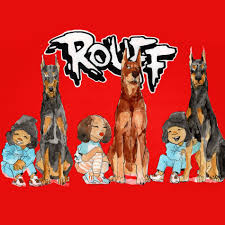

No blog de hoje vamos trazer uma dupla de gemeas que vem abalando a cena com canetadas de muito talento e senso de moda inabalavel, Tasha e Tracie é uma dupla de rappers brasileiras formada pelas irmãs gêmeas Tasha Okereke e Tracie Okereke, de 29 anos, crias da favela do Peri em SP, ambas que atuam na arte, moda, ativismo e musica.
unem o rap com o funk em suas canções e abordam diversos temas ligados a cultura negra, vivência periférica, sexo e ostentação, falando sobre moda, confiança e autoestima.
A ascensão começou com o lançamento do EP Rouff (2019) e se consolidaram com o EP Diretoria (2021). A boa repercussão do disco
Antes de se lançarem MC's, já foram camelô, trabalharam em telemarketing, em loja de shopping, em restaurante e tinham um blog chamado Expensive $h1t, sobre a valorização da autoestima e da autonomia de jovens negros da periferia por meio de conhecimento, arte e moda. Além de MC's, atuam/e já atuamcomo DJ'S, colunistas, diretoras de arte, estilistas, designers e palestrantes. São criadoras do movimento it favela, do blog expensive $hit e do coletivo MPIF.
O álbum "Rouff" de Tasha e Tracie, conta com a participação da cantora Ashira lançado em 2021, mistura hip-hop, R&B e sonoridades africanas em suas 5 faixas, destacando a diversidade cultural das artistas. Com letras que falam sobre empoderamento feminino e experiências na periferia, o projeto apresenta uma produção rica e envolvente. "Rouff" é um marco na representação de artistas negras na música brasileira e foi bem recebido pela crítica, consolidando seu espaço na cena musical.